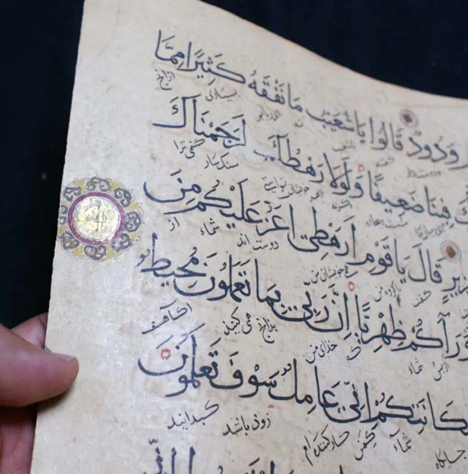
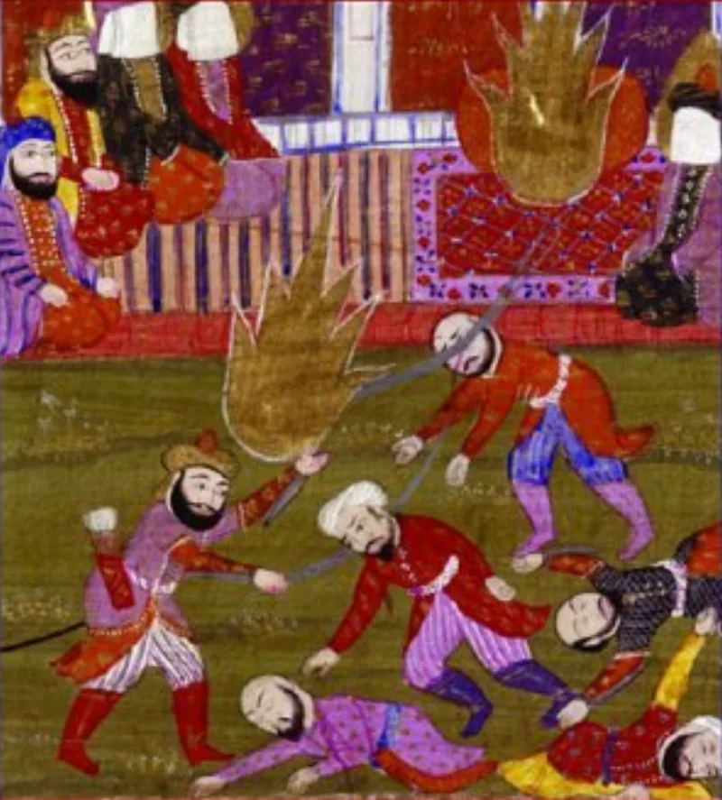

The facts sit in Islam's own trusted sources. You can make this point from their books alone.
After the Battle of the Trench, the Jewish tribe Banu Qurayza surrendered to Muhammad. Sa'd ibn Mu'adh gave the ruling.
Their fighting men were to be killed. Their children were to be taken captive.
Muhammad endorsed it as "the judgment of Allah" (Sahih al-Bukhari 3043).
Ibn Ishaq's biography records 600 to 900 males beheaded. The trenches were dug in the market of Medina.
Muhammad was present. The women and children were enslaved, and he took Rayhana from among the captives.
Age was judged by inspecting for pubic hair. A survivor, Atiyya al-Qurazi, says so himself (Sunan Abi Dawud 4404).
Not from enemies. Sahih al-Bukhari 3043 has the ruling and the endorsement.
Sunan Abi Dawud 4404 has the inspections. Ibn Ishaq's sira, in Guillaume's translation, gives the numbers.
M. J.
Kister of the Hebrew University wrote the standard study.
SeekersGuidance answers that this was treason in a siege. The tribe broke its defence pact by dealing with the attackers.
The penalty was wartime justice, not religious persecution. The verdict came from Sa'd, an arbitrator the tribe itself chose.
SeekersGuidance also argues it matched the tribe's own law in Deuteronomy 20:10-14. Some modern scholars, following W.
N. Arafat, dispute the 600 to 900 figure and hold that only the guilty leaders died.
They admit the event; the defences justify it. The Deuteronomy parallel does not hold: that law concerned distant cities in a one-time conquest, and it was never a standing model.
Arafat's lower number is rejected by Kister's study. What remains agreed on all sides is the execution of surrendered prisoners, the enslaving of their families, and the claim that the man who presided is the perfect example (Quran 33:21).
"Jesus said we would know a tree by its fruit. Can we look at this event together, from your books?"


They say it was treason in a siege, judged by an arbitrator the tribe chose.
SeekersGuidance answers that Banu Qurayza committed high treason. Medina was under siege, and its survival was at stake. They broke their defence pact by dealing with the attackers. The penalty was wartime justice for treachery, not religious persecution. The verdict came from Sa'd, an arbitrator the tribe itself accepted.
SeekersGuidance also argues that it matched the tribe's own law. Deuteronomy 20:10-14 sets that rule for a besieged and treacherous city. Some modern scholars, following W. N. Arafat, dispute the 600 to 900 figure. They call it a number taken over from Jewish narrators and blown up. On their view only the guilty leaders were put to death.
Strong for you: the event is granted, and only its defence is argued.
The event itself is not denied by mainstream Islam. The defences justify it. Bukhari preserves the judgment and Muhammad's endorsement. Abu Dawud preserves the puberty inspections. The sira, the early biography, supplies the scale.
The Deuteronomy 20 parallel fails on its own terms. That law addressed distant cities in Israel's one-time conquest. It was never a standing model. And Muhammad claimed a universal, final revelation of mercy (21:107). Arafat's revised number is rejected by M. J. Kister's classic study, and it sits awkwardly with the sahih material.
What remains conceded on all sides is this. Surrendered prisoners were executed. Their families were enslaved. And the man who presided is called humanity's perfect example.